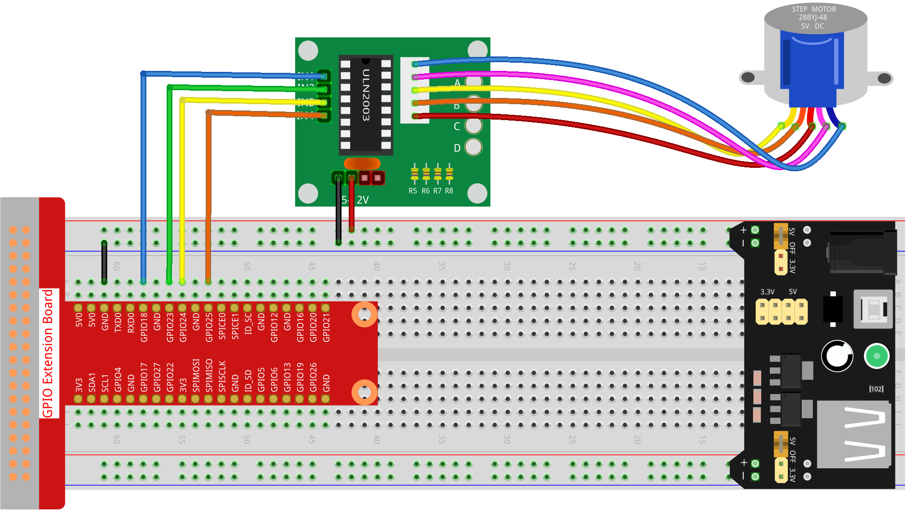

Note
Bonjour, bienvenue dans la communauté des passionnés de SunFounder Raspberry Pi, Arduino et ESP32 sur Facebook ! Plongez plus profondément dans l’univers du Raspberry Pi, de l’Arduino et de l’ESP32 avec d’autres amateurs.
Pourquoi nous rejoindre ?
Support d’experts : Résolvez les problèmes après-vente et surmontez les défis techniques avec l’aide de notre communauté et de notre équipe.
Apprenez et Partagez : Échangez des astuces et des tutoriels pour perfectionner vos compétences.
Avant-premières exclusives : Profitez d’un accès anticipé aux nouvelles annonces de produits et d’aperçus exclusifs.
Réductions spéciales : Bénéficiez de réductions exclusives sur nos derniers produits.
Promotions festives et tirages au sort : Participez à des promotions festives et à des tirages au sort.
👉 Prêt à explorer et à créer avec nous ? Cliquez sur [Ici] et rejoignez-nous dès aujourd’hui !
1.3.3 Moteur Pas à Pas
Introduction
Les moteurs pas à pas, en raison de leur conception unique, peuvent être contrôlés avec une grande précision sans avoir besoin de mécanismes de rétroaction. L’axe du moteur, équipé d’une série d’aimants, est commandé par un ensemble de bobines électromagnétiques qui sont chargées positivement et négativement dans une séquence spécifique, le faisant avancer ou reculer en petits « pas ».
Composants requis
Pour ce projet, nous aurons besoin des composants suivants :

Schéma de câblage

Procédures expérimentales
Étape 1 : Construisez le circuit.
Étape 2 : Ouvrez le fichier de code. .. raw:: html
<run></run>
cd ~/davinci-kit-for-raspberry-pi/python-pi5
Étape 3 : Exécutez le programme. .. raw:: html
<run></run>
sudo python3 1.3.3_StepperMotor.py
Pendant l’exécution du code, le moteur pas à pas tournera dans le sens horaire ou anti-horaire selon l’entrée de votre commande, soit “a” pour anti-horaire, soit “c” pour horaire.
Avertissement
Si le message d’erreur RuntimeError: Cannot determine SOC peripheral base address apparaît, veuillez consulter Si gpiozero ne fonctionne pas..
Code
Note
Vous pouvez modifier/réinitialiser/copier/exécuter/arrêter le code ci-dessous. Avant cela, assurez-vous d’être dans le chemin source, comme davinci-kit-for-raspberry-pi/python-pi5. Après modification, vous pouvez exécuter directement le programme pour voir l’effet.
#!/usr/bin/env python3
from gpiozero import OutputDevice
from time import sleep
# Initialiser les broches du moteur aux broches GPIO 18, 23, 24, 25
motorPin = [OutputDevice(pin) for pin in (18, 23, 24, 25)]
# Définir les paramètres de vitesse de rotation du moteur
rotationParMinute = 15
stepsPerRevolution = 2048
# Calculer le temps d'attente entre chaque pas pour une opération fluide du moteur
stepSpeed = (60 / rotationPerMinute) / stepsPerRevolution
def rotary(direction):
"""
Controls the rotation of the motor based on the specified direction.
:param direction: 'c' for clockwise, 'a' for anti-clockwise
"""
if direction == 'c':
# Execute the stepping sequence for clockwise rotation
for j in range(4):
for i in range(4):
if 0x99 << j & (0x08 >> i):
motorPin[i].on()
else:
motorPin[i].off()
sleep(stepSpeed)
elif direction == 'a':
# Execute the stepping sequence for anti-clockwise rotation
for j in range(4):
for i in range(4):
if 0x99 >> j & (0x08 >> i):
motorPin[i].on()
else:
motorPin[i].off()
sleep(stepSpeed)
def loop():
"""
Continuously prompts the user to select the motor rotation direction
and controls the motor based on this input.
"""
while True:
direction = input('Select motor direction a=anticlockwise, c=clockwise: ')
if direction == 'c':
print('Motor running clockwise\n')
break
elif direction == 'a':
print('Motor running anti-clockwise\n')
break
else:
print('Input error, please try again!')
# Maintient la rotation du moteur dans la direction sélectionnée
while True:
rotary(direction)
def destroy():
"""
Safely turns off all motor pins, used for clean shutdown.
"""
for pin in motorPin:
pin.off()
# Exécution principale du programme
try:
loop()
except KeyboardInterrupt:
destroy() # Handle keyboard interrupt to safely shut down the motor
Explication du code
Cette section importe les bibliothèques nécessaires.
gpiozeropour contrôler les broches GPIO ettimepour la fonction sleep utilisée dans la gestion des temporisations.#!/usr/bin/env python3 from gpiozero import OutputDevice from time import sleep
Initialise les broches GPIO 18, 23, 24 et 25 comme dispositifs de sortie pour contrôler le moteur pas à pas.
# Initialiser les broches du moteur aux broches GPIO 18, 23, 24, 25 motorPin = [OutputDevice(pin) for pin in (18, 23, 24, 25)]
Définit la vitesse de rotation du moteur et calcule l’intervalle de temps entre chaque pas pour un fonctionnement fluide.
# Définir les paramètres de vitesse de rotation du moteur rotationParMinute = 15 pasParRévolution = 2048 # Calculer le temps d'attente entre chaque pas pour une opération fluide du moteur stepSpeed = (60 / rotationPerMinute) / stepsPerRevolution
La fonction
rotationcontrôle la rotation du moteur. Elle utilise la manipulation de bits et une séquence de pas pour activer les broches du moteur dans le bon ordre pour une rotation horaire ou anti-horaire.def rotary(direction): """ Controls the rotation of the motor based on the specified direction. :param direction: 'c' for clockwise, 'a' for anti-clockwise """ if direction == 'c': # Exécute la séquence de pas pour la rotation horaire for j in range(4): for i in range(4): if 0x99 << j & (0x08 >> i): motorPin[i].on() else: motorPin[i].off() sleep(stepSpeed) elif direction == 'a': # Exécute la séquence de pas pour la rotation anti-horaire for j in range(4): for i in range(4): if 0x99 >> j & (0x08 >> i): motorPin[i].on() else: motorPin[i].off() sleep(stepSpeed)
Cette fonction invite continuellement l’utilisateur à choisir la direction de rotation du moteur et contrôle le moteur en fonction de l’entrée.
def loop(): """ Continuously prompts the user to select the motor rotation direction and controls the motor based on this input. """ while True: direction = input('Select motor direction a=anticlockwise, c=clockwise: ') if direction == 'c': print('Motor running clockwise\n') break elif direction == 'a': print('Motor running anti-clockwise\n') break else: print('Input error, please try again!') # Maintient la rotation du moteur dans la direction sélectionnée while True: rotary(direction)
La fonction
détruireéteint toutes les broches du moteur. Elle est utilisée pour un arrêt propre, garantissant que le moteur s’arrête en toute sécurité lorsque le programme se termine.def destroy(): """ Safely turns off all motor pins, used for clean shutdown. """ for pin in motorPin: pin.off()
Le programme principal appelle
boucleet gère les interruptions clavier (comme Ctrl+C) pour arrêter proprement le moteur en utilisantdétruire.# Exécution principale du programme try: boucle() except KeyboardInterrupt: détruire() # Gère l'interruption clavier pour arrêter proprement le moteur